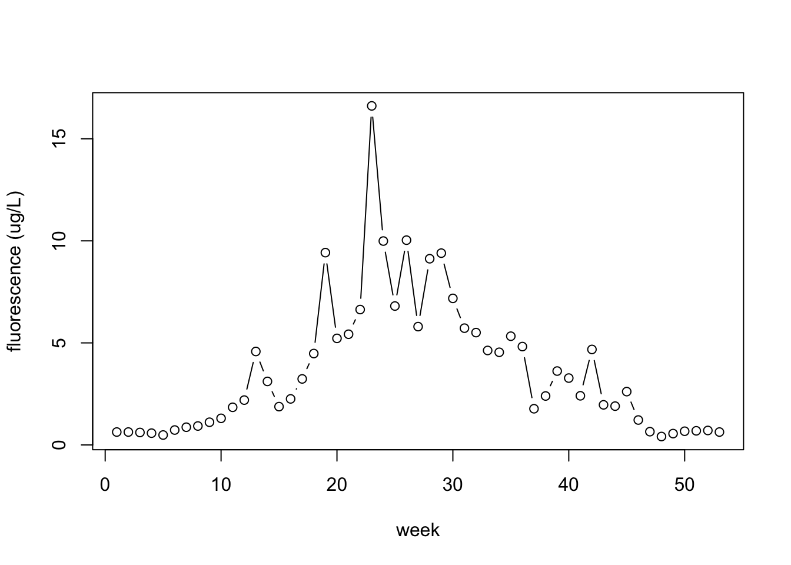
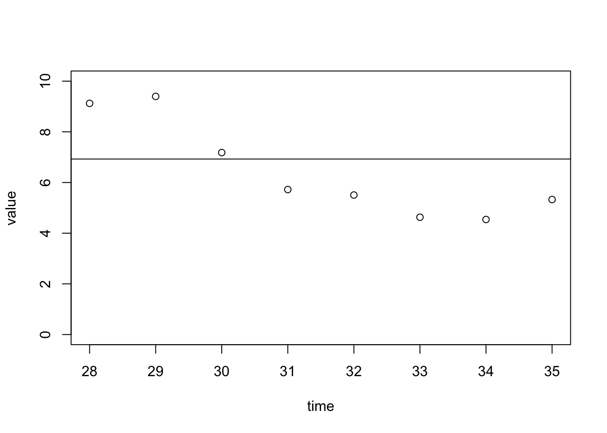

Warning in read.table(file = file, header = header, sep = sep, quote = quote, :
incomplete final line found by readTableHeader on
'/Users/mollylime/Documents/GitHub/Bglandula_FHL_energetics/data/subtidal_data/Lisa_growth.csv'
This file also includes the tissue mass, but this isn’t used in this model. This is a size-based model.
4.0.2 Read in food data
No chlorophyll in 2011 dataset.
We are using a 3-year average to estimate approximate chlorophyll at the time that this growth study was performed.
There is POM data, but we don’t have POM data for the full intertidal experiment to compare it to. We tried a few methods. I’m including the commented out code below.
Set parameters
FH <-1IJ <-1
Read in chl data
library(lubridate)
Loading required package: timechange
Attaching package: 'lubridate'
The following objects are masked from 'package:base':
date, intersect, setdiff, union
library(dplyr)
Attaching package: 'dplyr'
The following objects are masked from 'package:stats':
filter, lag
The following objects are masked from 'package:base':
intersect, setdiff, setequal, union
library(tidyr)PB <-read.csv(here::here("data/environmental_data/PDBGSWQ_dataonly.csv"), stringsAsFactors =FALSE)PB$datetime <-as.POSIXct(PB$m.d.y.hh.mm, format ="%m/%d/%y %H:%M")#subset to only include the past 3 years...# plot(PB$datetime, PB$ug.l, pch = ".")PB_subset <- PB[PB$datetime >as.Date("2017-01-01") & PB$datetime <as.Date("2020-01-01"),]PB <- PB_subset#plot(PB$datetime, PB$ug.l, pch = ".")vars <-"m.d.y.hh.mm"dat <- PB %>%drop_na(ug.l, any_of(vars))%>% dplyr::group_by(time =week(datetime)) %>% dplyr::summarise(value =mean(ug.l, na.rm =TRUE), .groups ='keep')#datplot(dat, type ='b', ylab ="fluorescence (ug/L)", xlab ="week")

The week this subtidal experiment performed in was Wk 30 - 35,
Note: ~5ug/L (would be considered above saturating for mussels), and the mean is 6.9.
We used a 2 week lag between food availability and growth, so we took the average of weeks 28 to 33. (Weeks 28-35 are plotted below).
# Just averaging of this full timeperiod, including a 2 week lag.plot(dat[28:35,], ylim =c(0,10))abline(h =mean(dat$value[28:33]))

# Food value ####(FoodLevel_ug_L <-mean(dat$value[28:33]))
There are more code in the original file, but it says elsewhere that this is outdated code and the model setup code to be used is from the model_setup file.